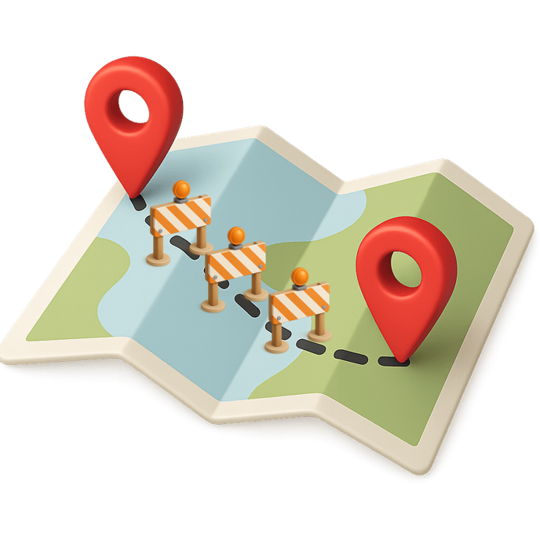

apresentações, clareza e autoria
Segunda-feira, 14h30. Falta uma semana pra sua palestra.
Você já revisou todo o conteúdo. Está impecável! Com referências, bem embasado. Mas tá chato.
Você, que vai apresentar, só quer "acabar logo com isso".
Imagina quem vai ouvir?
Abaixo alguns slides que são mais comuns do que eu gostaria... Se algum desses te deu um aperto, um incômodo o problema não é você. O ponto é que existe uma grande diferença entre ter conteúdo bom e apresentar ele bem.
A maioria das apresentações não fracassa por falta de informação. Fracassa porque tenta mostrar informação demais, tudo do mesmo tamanho, tudo com a mesma importância.
Eu não crio apresentações bonitas. Ajudo a encontrar a clareza que já existe no meio da bagunça — e a contar isso de um jeito que também tenha graça, não só estrutura.
Isso é o que eu chamo de apresentação CIA: Clara, Interessante, Autoral. Clara porque tem uma ideia central, não vinte. Interessante porque não soa igual a todas as outras. Autoral porque é sua, na sua voz — não um template genérico com seu nome em cima.
RO³TA é o processo que sustenta toda apresentação CIA que eu entrego ou ajudo a construir. Não é fórmula mágica — é uma sequência de perguntas, sempre nessa ordem, antes de qualquer slide ser aberto.
O que você já sabe, já viveu, já domina sobre o assunto — e sobre quem vai te ouvir. Toda apresentação boa começa aqui, não na primeira lâmina do PowerPoint.

O³De onde vem essa mensagem, que dúvidas ou resistências a plateia já carrega antes de você abrir a boca, e o que precisa ficar na cabeça dela quando você terminar.
O caminho que a apresentação percorre para sair do início e chegar nesse objetivo — a estrutura, o roteiro, a ordem das ideias.
A entrega final. O que a plateia realmente vê — os slides prontos para serem Claros, Interessantes e Autorais.
Cada projeto abaixo é real. Os de cliente têm identificação removida por confidencialidade — os pessoais, não, porque não têm essa restrição, então mostram mais risco e mais experimentação.
Você só quer saber onde ela trava, sem refazer nada ainda. Eu assisto, aplico a lente RO³TA e devolvo o que funciona, o que atrapalha, e o que mudar primeiro.
Os slides já existem, falta a virada visual. Eu dou a clareza sem descartar o que já funciona.
O O³ do método também vale pra essa página: se ficou alguma dúvida na sua cabeça, ela provavelmente já está aqui.
Não preciso ser especialista no seu tema pra ajudar na clareza dele — o método parte do seu Repertório, não do meu. Meu trabalho é estrutura e narrativa; o conteúdo técnico continua sendo seu.
Diagnóstico: entrega em poucos dias úteis após a reunião. Redesenho: normalmente algumas semanas, dependendo da complexidade do material — combinado na conversa inicial.
PowerPoint (PPTX), 100% editável, feito no Office 365. Se preferir Canva ou outra ferramenta, alinhamos isso antes de começar.
Combinamos escopo e valor na conversa inicial, e o pagamento é feito via PIX (Brasil) ou MB WAY (Portugal).
Sim. Nenhum material de cliente é publicado ou usado como exemplo sem remover toda identificação antes.
Por isso as entregas são em sprints, não só no final — você acompanha o andamento e ajusta o rumo antes de chegar na versão final, dentro das rodadas de ajuste incluídas.